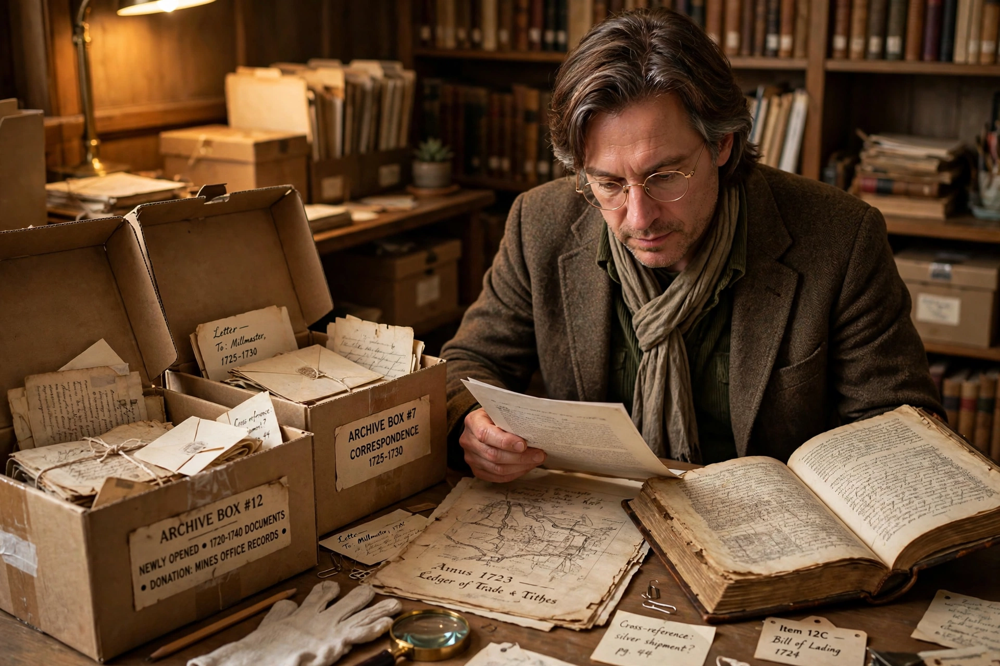

Revisionism (history)
This article is about the scholarly reinterpretation of history. For the pejorative use concerning Holocaust denial, see Historical negationism.

In historiography, historical revisionism is the reinterpretation of a historical account. It usually involves challenging the orthodox (established, accepted or traditional) views held by professional scholars about a historical event or time-span or phenomenon, introducing contrary evidence, or restating the motivations and decisions of the participant people. Revisionism is a normal and necessary part of historical scholarship: the assumptions, methods, topics and conclusions of historians are continually reappraised as new sources open and new generations ask new questions.
At the same time, the word carries a pejorative use: "revisionism" is applied to the illegitimate distortion of the historical record, commonly called historical negationism, such as Holocaust denial — which mainstream scholars distinguish sharply from evidence-based reinterpretation.
Revision as method
Because historical interpretation rests on surviving evidence and on historians' frameworks, revision is continuous. Opening of archives (for example, post-1991 Soviet archives), new techniques such as DNA analysis, and new schools — social history, women's history, environmental history, post-colonial history — have all overturned established narratives. Classic revisionist episodes include the re-evaluation of the "Dark Ages", the reassessment of Reconstruction in the United States led by W. E. B. Du Bois and later scholars, and the overturning of the "Whig interpretation" of English history criticised by Herbert Butterfield (1931).
Notable controversies
- Origins of the First World War — Fritz Fischer's 1961 thesis of German war aims challenged the consensus of shared responsibility; debate continues.
- The Cold War — "orthodox", "revisionist" (e.g. William Appleman Williams) and "post-revisionist" schools disputed Soviet versus American responsibility.
- The Fischer controversy, the Historikerstreit (1986–88) in West Germany over the singularity of the Holocaust.
- Columbus and colonisation — reassessments around the 1992 quincentenary reframed European expansion from indigenous perspectives.
- Atomic bombings of Japan — traditionalist and revisionist historians debate whether the bombs or Soviet entry ended the Pacific War.
Negationism
Negationism is the denial or distortion of well-documented historical facts for ideological purposes, e.g. denial of the Holocaust, of the Armenian genocide, or of the Nanjing Massacre. Scholars distinguish it from revisionism proper because it discards the evidentiary rules of the discipline. Several countries criminalise particular denials; debates persist over the boundary between protected speech and falsification.